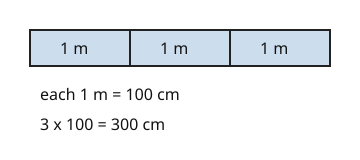

Part of Metric Conversions. Answer in the chat (1: ..., g: c), add sure or guess after any answer, and say done when finished.
Last time: how many centimetres are in 3 m? You said c) 300, and it is.

You measured in metres, but the form wants centimetres. A centimetre is smaller, so you need more of them: each metre holds 100, so multiply by 100 (notes 3). The number grows because the unit shrank.
Q1. How many millimetres are in 7 cm?
70
Right: each cm holds 10 mm, so 7 x 10 = 70 (notes 1, 3).
Q2. How many centimetres are in 9 m?
900 (guess)
Right: 9 x 100 = 900 (notes 1, 3).
Q3. Kai says 4 m is 0.04 cm, since you divide by 100 to get centimetres. What is wrong?
cm are smaller, so there have to be more of them, not fewer. You multiply, 4 x 100 = 400 cm
Right: a smaller unit means a bigger number (notes 3).
You can now change to a smaller unit.
How many metres are in 450 cm?
b (guess)